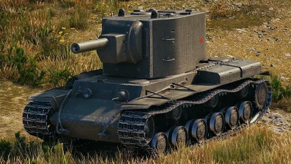
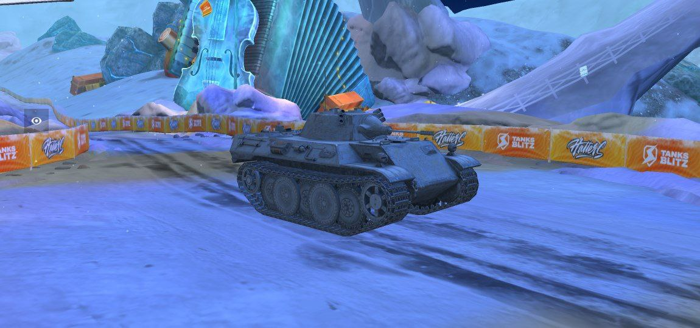
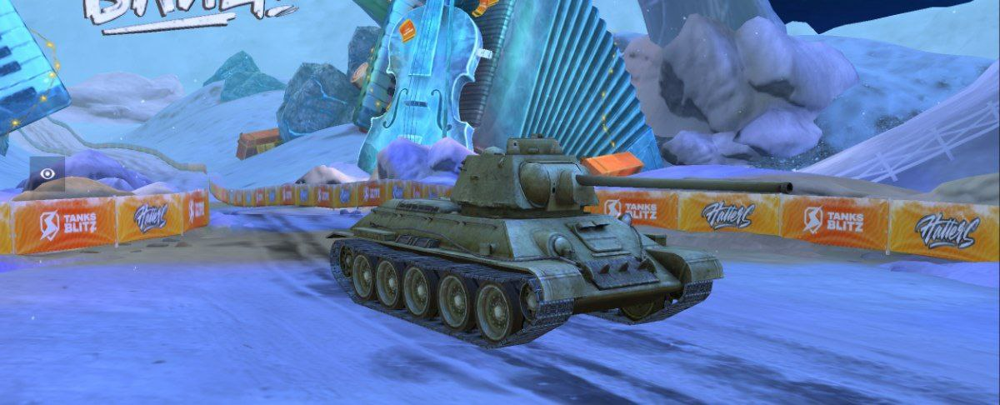

.webp)
.webp)
.webp)
.webp)
World of Tanks - это многопользовательская онлайн-игра, посвященная танковым сражениям. В игре вы сможете управлять различными историческими танками и принимать участие в эпических боях на разнообразных аренах.
World of Tanks - клиентская командная массовая многопользовательская онлайн-игра, посвящённая бронированным машинам середины XX века. В распоряжении игроков более 40 боевых карт, созданных на основе реальных локаций времён Второй мировой войны, и исторически достоверная техника 11 наций общей численностью более 600 единиц.
World of Tanks была разработана компанией Wargaming и впервые выпущена в 2010 году. Основная задача разработчиков заключалась в создании реалистичного и захватывающего танкового опыта, который позволяет игрокам погрузиться в мир танковых сражений.
С течением времени игра получила множество обновлений и улучшений, включая новые танки, карты и игровые режимы. Разработчики также активно поддерживают игру, предлагая регулярные обновления и новый контент для игроков.
Для того чтобы скачать World of Tanks, вам необходимо посетить официальный сайт игры или использовать платформу, через которую игра доступна (например, Steam). На официальном сайте вы сможете найти ссылку на загрузку игры, выбрав соответствующую платформу (Windows, macOS, Xbox, PlayStation и т.д.).
После загрузки и установки игры, вам потребуется создать аккаунт, чтобы начать играть. Затем вы сможете выбрать танк, присоединиться к битве и наслаждаться адреналином танковых сражений в World of Tanks.
World of Tanks предлагает широкий выбор танков различных наций и классов. В игре вы найдете исторические танки, включая легкие, средние и тяжелые танки, а также ПТ-САУ (противотанковые самоходные установки) и артиллерию.
Каждый танк имеет свои уникальные характеристики, такие как броня, маневренность, скорострельность и пробитие. Игроки могут исследовать и развивать различные модели танков, открывая новые техники и модули для повышения эффективности в бою.
World of Tanks имеет активное и преданные сообщество игроков со всего мира. Сообщество включает в себя официальные форумы, группы в социальных сетях, стримы и многое другое. Здесь вы можете общаться с другими игроками, делиться опытом, обсуждать стратегии и участвовать в соревнованиях.
Также внутри игры есть система кланов, которая позволяет игрокам объединяться в группы для совместной игры и соревнований. В кланах можно находить новых друзей, прокачивать свои навыки и участвовать в клановых битвах.
|  |
Немецкий лёгкий танк пятого уровня. Обладает неплохой динамикой и лобовой бронёй, расположенной под рациональным углом. Может выполнять роль пассивного разведчика, а также перехватчика вражеских лёгких танков. Предшественник лёгкого танка VK 28.01. |
|  |
Легендарный советский танк. За счёт хорошей мобильности и высокой скорострельности может применяться как типичный СТ в маневренном бою с группой себе подобных. Однако высокая точность 57 мм орудия позволяет использовать и снайперскую тактику. Предшественник средних танков Т-34-85 и А-43. |